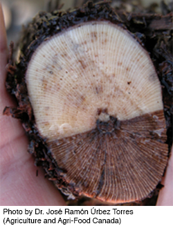
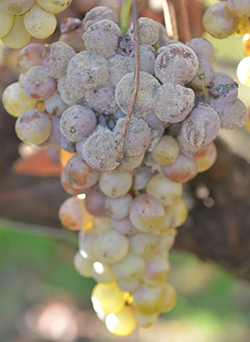
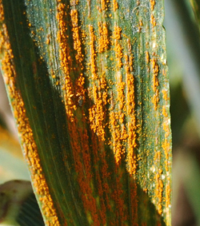

Data

Eutypa lata (isolate UCR-EL1)
Draft Genome - collaboration with Philippe Rolshausen (UCR)Total size: 54.0 Mb (gaps: 103 kb; n.scaffolds: 2,334; median coverage: 97X)
N50: 68.3 kb
L50: 238
G+C: 46.6%
Predicted protein coding genes: 11,818
Scaffolds: EL1_scaffolds.v0.4.fasta.gz
Contigs: EL1_contigs.v0.4.fasta.gz
Peptides (ab initio): EL1_proteins.v0.4.fasta.gz
Transcripts (ab initio): EL1_transcripts.v0.4.fasta.gz
WGS Accession: AORF00000000
Raw reads: Short Read Archive
Citation: Ulate-Blanco et al., 2013 Genome Announcements in press

Botrytis cinerea (isolate BcDW1)
Draft GenomeTotal size: 42.1 Mb (gaps: 58 kb; n.scaffolds: 453; median coverage: 125.3X)
N50: 194 kb
L50: 69
G+C: 42%
Predicted protein coding genes: 11,073
Scaffolds: BcDW1_scaffolds.v0.42.fasta.gz
Contigs: BcDW1_contigs.v0.42.fasta.gz
Peptides (ab initio): BcDW1_proteins-v0.1.fasta.gz
Transcripts (ab initio): BcDW1_transcripts-v0.1.fasta.gz
WGS Accession: AORW00000000
Raw reads: Short Read Archive
Citation: Ulate-Blanco et al., 2013 Genome Announcements in press

Puccinia striiformis f.sp. tritici
Draft genomesPst-21: AORR00000000
Pst-43: AORQ00000000
Pst-130: AEEW00000000
Pst-87/7: AORT00000000
Pst-08/21: AORS00000000
Ab initio gene models are available from yellowrust.com
Citations:
Cantu et al., 2011 PLoS ONE
Cantu et al., 2013 BMC Genomics